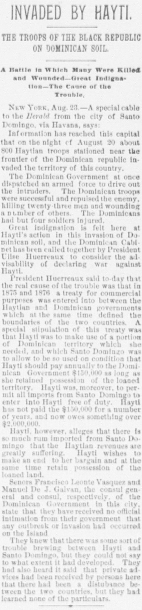

President Huerreaux said to day that the real cause of the troubleEl presidente Heureaux dijo hoy que la verdadera causa de la
The Daily Critic. Washington City, D.C., August 23, 1890. Page 1. Published by Washington Critic Co., 1890. A daily newspaper, 1890–1890.The Daily Critic. Washington City, D.C., 23 de agosto de 1890. Página 1. Publicado por Washington Critic Co., 1890. Periódico diario, 1890–1890. View the originalVer el original

President Ulises Heureaux called a cabinet meeting to consider declaring war against Haiti over a longstanding dispute regarding an 1875-1876 treaty, under which Haiti leased Dominican territory and agreed to pay an annual fee of $150,000 but now owes over $2,600,000. While Haiti wishes to end the agreement while retaining the land due to suffering revenues from duty-free Dominican imports, Dominican consul generals Francisco Ponte Vasquez and Manual De J. Galvan stated they received no official word of an outbreak or invasion, though they acknowledged trouble was brewing.El presidente Ulises Heureaux convocó una reunión de gabinete para considerar una declaración de guerra contra Haití debido a una prolongada disputa sobre un tratado de 1875-1876, según el cual Haití arrendaba territorio dominicano y se comprometía a pagar una cuota anual de 150.000 dólares, pero ahora adeuda más de 2.600.000 dólares. Aunque Haití desea dar por terminado el acuerdo conservando al mismo tiempo la tierra debido a las pérdidas de ingresos provocadas por las importaciones dominicanas libres de aranceles, los cónsules generales dominicanos Francisco Ponte Vásquez y Manuel de J. Galván declararon que no habían recibido notificación oficial de un estallido armado o invasión, si bien reconocieron que se avecinaban problemas.
FULL TEXT:TEXTO COMPLETO:
The Daily Critic August 23, 189023 de agosto de 1890
INVADED BY HAYTI.INVADE HAITÍ.
THE TROOPS OF THE BLACK REPUBLIC ON DOMINICAN SOIL.LAS TROPAS DE LA REPÚBLICA NEGRA EN SUELO DOMINICANO.
A Battle in Which Many Were Killed and Wounded—Great Indignation—The Cause of the Trouble.Una batalla en la que muchos fueron muertos y heridos—Gran indignación—La causa del problema.
NEW YORK, Aug. 23.—A special cable to the Herald from the city of Santo Domingo, via Havana, says:NUEVA YORK, 23 de agosto.—Un cable especial al Herald desde la ciudad de Santo Domingo, vía La Habana, dice:
Information has reached this capital that on the night of August 20 about 800 Haytian troops stationed near the frontier of the Dominican republic invaded the territory of this country.Información ha llegado a esta capital de que en la noche del 20 de agosto unos 800 soldados haitianos estacionados cerca de la frontera de la república dominicana invadieron el territorio de este país.
The Dominican Government at once dispatched an armed force to drive out the intruders. The Dominican troops were successful and repulsed the enemy, killing twenty-three men and wounding a number of others. The Dominicans had but four soldiers injured.El Gobierno dominicano despachó de inmediato una fuerza armada para expulsar a los intrusos. Las tropas dominicanas tuvieron éxito y repelieron al enemigo, matando a veintitrés hombres e hiriendo a un número de otros. Los dominicanos tuvieron solo cuatro soldados heridos.
Great indignation is felt here at Hayti's action in this invasion of Dominican soil, and the Dominican Cabinet has been called together by President Ulise Huerreaux to consider the advisability of declaring war against Hayti.Gran indignación se siente aquí por la acción de Haití en esta invasión de suelo dominicano, y el Gabinete dominicano ha sido convocado por el presidente Ulise Huerreaux para considerar la conveniencia de declarar la guerra contra Haití.
President Huerreaux said to-day that the real cause of the trouble was that in 1875 and 1876 a treaty for commercial purposes was entered into between the Haytian and Dominican governments which at the same time defined the boundaries of the two countries. A special stipulation of this treaty was that Hayti was to make use of a portion of Dominican territory which she needed, and which Santo Domingo was to allow to be so used on condition that Hayti should pay annually to the Dominican Government $150,000 as long as she retained possession of the loaned territory. Hayti was, moreover, to permit all imports from Santo Domingo to enter into Hayti free of duty. Hayti has not paid the $150,000 for a number of years, and now owes something over $2,000,000.El presidente Huerreaux dijo hoy que la causa real del problema fue que en 1875 y 1876 se entró en un tratado con fines comerciales entre los gobiernos haitiano y dominicano que al mismo tiempo definió los límites de los dos países. Una estipulación especial de este tratado fue que Haití había de hacer uso de una porción de territorio dominicano que necesitaba, y que Santo Domingo había de permitir que fuera así usado con la condición de que Haití pagara anualmente al Gobierno dominicano $150,000 mientras retuviera la posesión del territorio prestado. Haití había, además, de permitir que todas las importaciones desde Santo Domingo entraran en Haití libres de derechos. Haití no ha pagado los $150,000 por un número de años, y ahora debe algo más de $2,000,000.
Hayti, however, alleges that there is so much rum imported from Santo Domingo that the Haytian revenues are greatly suffering. Hayti wishes to make an end to her bargain and at the same time retain possession of the loaned land.Haití, sin embargo, alega que hay tanto ron importado desde Santo Domingo que las rentas haitianas están sufriendo grandemente. Haití desea poner fin a su trato y al mismo tiempo retener la posesión de la tierra prestada.
Senors Francisco Leonte Vasquez and Manuel De J. Galvan, the consul general and consul, respectively, of the Dominican Government in this city, state that they have received no official intimation from their government that any outbreak or invasion had occurred on the island.Los señores Francisco Leonte Vasquez y Manuel De J. Galvan, el cónsul general y el cónsul, respectivamente, del Gobierno dominicano en esta ciudad, declaran que no han recibido intimación oficial alguna de su gobierno de que ningún estallido o invasión hubiera ocurrido en la isla.
They knew that there was some sort of trouble brewing between Hayti and Santo Domingo, but they could not say to what extent it had developed. They had also heard it said that private advices had been received by persons here that there had been a distubance between the two countries, but they had learned none of the particulars.Sabían que había alguna clase de problema preparándose entre Haití y Santo Domingo, pero no podían decir hasta qué punto se había desarrollado. También habían oído decir que noticias privadas habían sido recibidas por personas aquí de que había habido una perturbación entre los dos países, pero no habían sabido ninguno de los particulares.